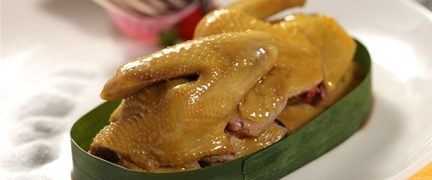
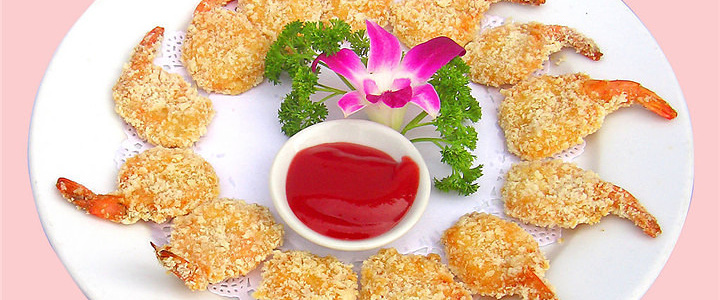
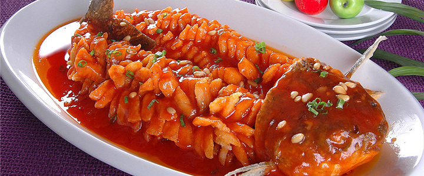
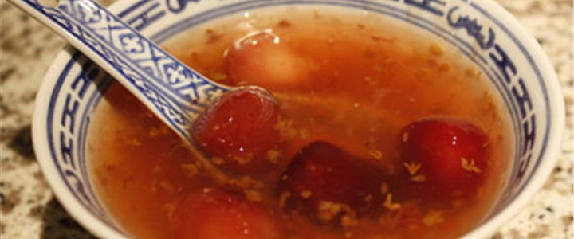

鸭血粉丝

提起南京，地标美食就是鸭血粉丝了。在南京，随处可见卖鸭血粉丝汤的铺子。粉丝，鸭血，鸭肝，鸭肠配以老鸭汤烧制而成，当地人把鸭子的作用发挥到了极致。汤清淡而鲜美，料足量多。小小一碗粉丝汤，却把鸭的美味包含其中，香气四溢，爽口宜人。
盐水鸭

到“鸭都”南京是不能不吃盐水鸭的。盐水鸭久负盛名，据说至今已有一千多年的历史，皮白肉嫩、肥而不腻、鲜香美味，具有香、酥、嫩的特点。每年中秋前后的盐水鸭色味最佳，是因为鸭在桂花盛开季节制作特别香嫩，故美名日桂花鸭。
凤尾虾

虾肉洁白，尾壳鲜红，形似凤尾，衬以绿色青豆，色彩艳丽，虾味鲜嫩，佐以鸭油烹调，其味更美。相传有一次，小学徒在挤虾仁时，没有挤干净，留了尾部半截壳没挤下来，放油锅里一走，结果壳红肉白，十分好看，厨师见后灵机一动，干脆将青虾全部去头壳，身壳，留尾壳，去红筋，上浆，配以青豆，冬菇丁，笋丁，葱白，然后用鸭油爆炒。上桌后，只见其肉白尾红，如艳丽的凤凰尾巴，令人赏心悦目，遂将此菜取名为“凤尾虾”。
松鼠鱼

松鼠鱼是江苏省汉族传统名菜之一，松鼠鱼一美在形似松鼠，二美在色泽，浇汁色泽鲜亮，橙红色让人充满食欲，三美在口感，鱼肉经过两次油炸，即便再浇汁之后仍旧鲜嫩酥香，给人以独特口感。
桂花糖芋苗

南京人很是大爱的一道小吃。可爱的芋苗口感润滑爽口、香甜酥软，搭配红色的桂花汤汁，两者的结合，吃后唇齿留香。